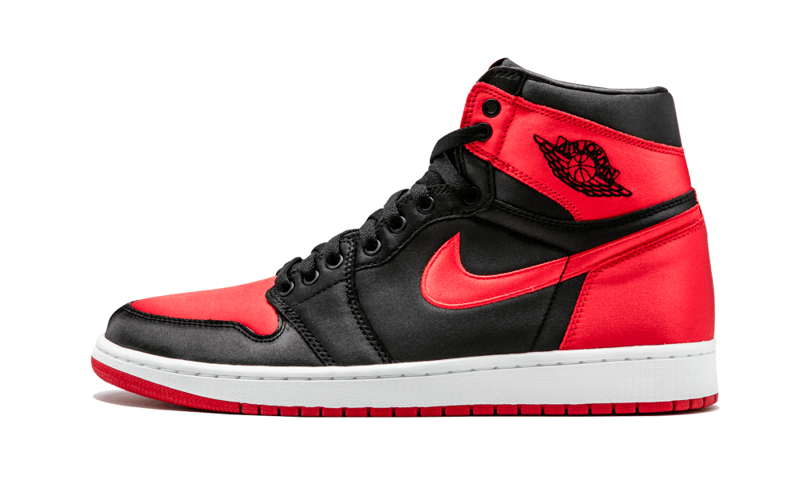
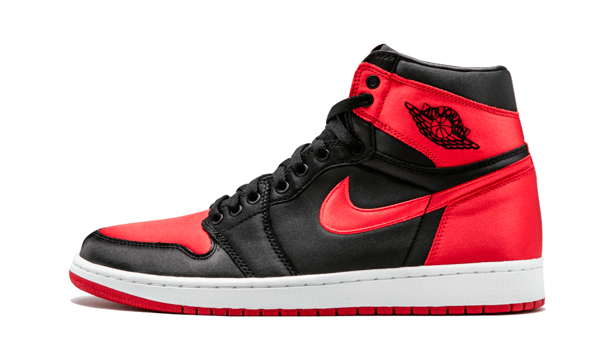

Video Games were first made in the late 1950s, and since then, has captivated the minds of kids and young adults.
These days, there are many types of genres of video games and many game companies making them. The pictures up
above are of World of Warcraft, one of the worlds most popular MMO game, and Steam, a popular game
platform for PC. WoW (World of Warcraft) is one of the first computer games I've ever played and I still play it
to this day.
 

The Sneaker culture was started when NBA star Micheal Jordan partnered with Nike to create shoes called "Air Jordans."
Ever since the first Air Jordan shoe was released, they've been popular with people around the globe who were inspired by
Micheal's skill. The picture above is the iconic "Jumpman," which has become synonymous with Jordan. Today, some Air Jordans
sell out in seconds in several different stores. In fact, Jordan has made more money from his merchandise than his entire career
in the NBA.